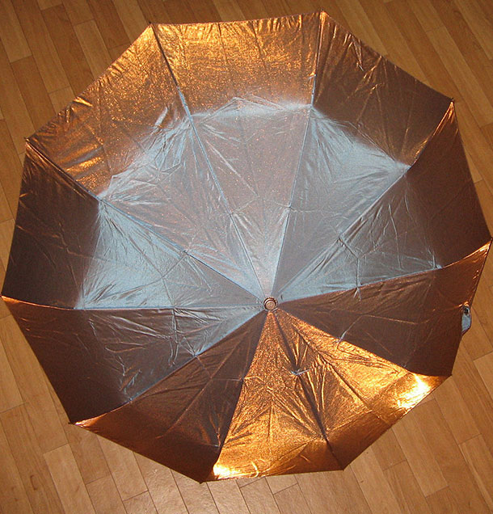
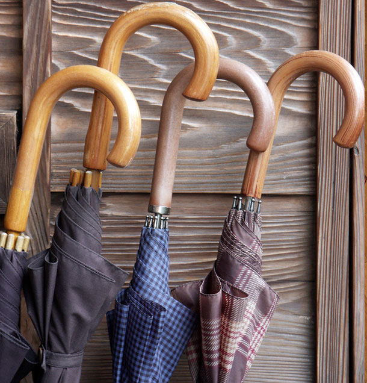
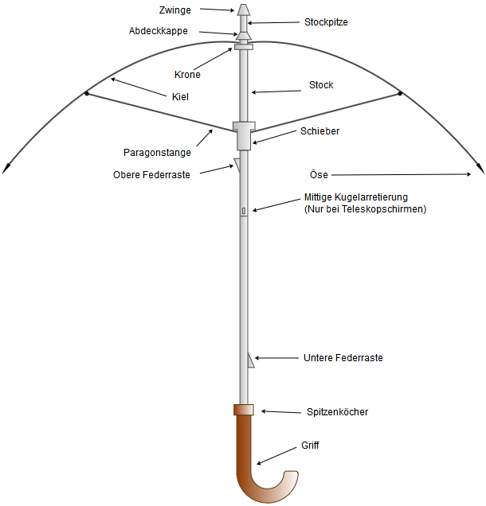

Die Geschichte der Regenschirme

Ein Regenschirm (selten auch noch frz. Parapluie) ist ein alltäglicher Gebrauchsgegenstand; er soll vor Wettereinflüssen schützen und besteht aus einer Plane aus Stoff oder heute meist Nylon.
Traditionell wird er an einem langen lotrecht aufgesetzten Stiel in die Höhe gehalten.

Zum Festhalten besitzt der normale Regenschirm einen Griff, meist in Form eines gekrümmten Spazierstock-Griffes oder eines Knaufs. So schützt der (tragbare) Regenschirm vor Niederschlägen, birgt aber bei stärkerem Wind stets die Gefahr des Überstülpens bzw. Umschlagens. Entworfen und angefertigt werden Regenschirme traditionell von Schirmmachern, heute beherrscht jedoch die industrielle Produktion den Markt.
Was ein Regenschirm braucht
Regenschirm-Einzelteile
- Einen praktischen Griff
- Eine gewisse Handlichkeit
- Ein tolles Design